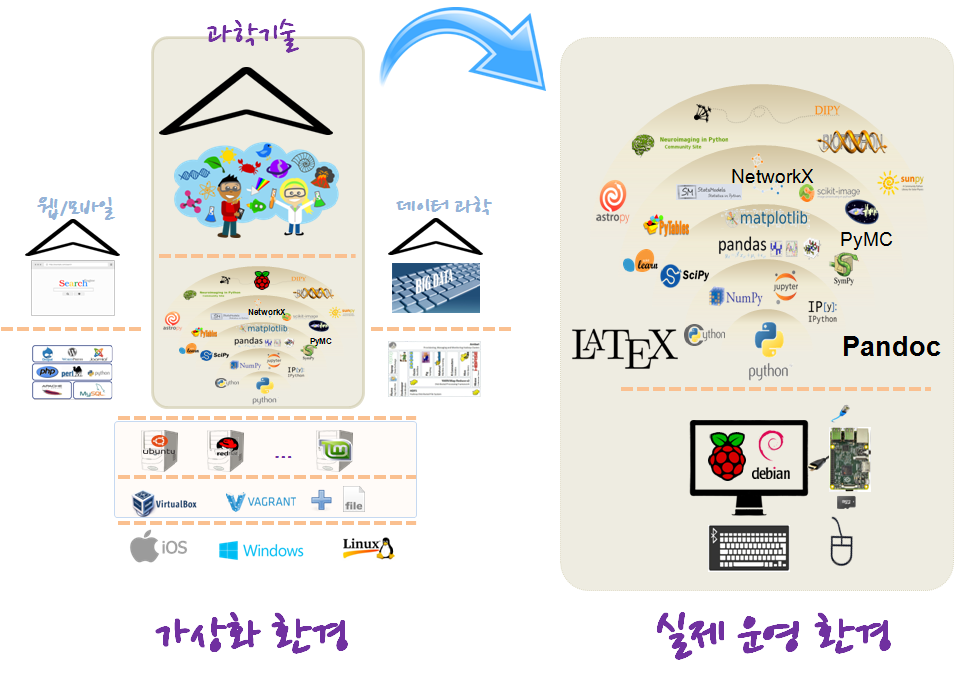
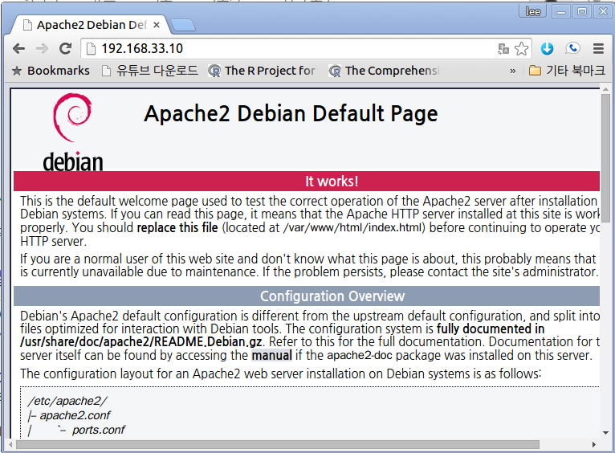

xwMOOC 컴퓨터
라즈베리 파이 가상화 - 데스크톱
학습 목표
- 가상화 라즈베리 파이 과학 컴퓨팅 환경을 실물 라즈베리 파이 하드웨어에 설치한다.
- 최소 라즈비언 운영체제 기반 주피터를 통합개발환경으로 설정한다.
Pandoc,LaTeX, 파이썬으로 과학 컴퓨팅 핵심 툴체인을 구축한다.- 기계학습, 데이터 과학 등 최신 과학 컴퓨팅 최신 팩키지도 함께 설치한다.

라즈베리 파이 과학 툴체인 구축 준비물
1. 최소사양 라즈비안 설치
Raspbian (minimal) unattended netinstaller을 다운로드 한다. (최소) 무인 네트워크를 통해서 라즈비언을 설치할 수 있다.
다운로드 받은 raspbian-ua-netinst-v1.0.7.zip 파일 크기가 17MB에 불과하다.
2. 라즈베리 파이를 주피터 서버로 만들기
2.1. 최소사양 라즈비언을 설치한다.
- 최소사양 라즈비언을 다운로드 붇아 SD카드에 넣는다.
- SD카드 포맷터를 사용해서 포맷한다.
- 최소사양 GitHub 사이트에서 환경에 맞는 파일을 다운로드 한다.
- 압축을 풀어 SD카드에 복사하여 붙여넣는다.
- SD카드에서 신규로
installer-config.txt파일을 생성하고 필요한 설정을 한다.
packages=nano,sudo,git,pandoc
release=jessie2.2. 최소사양 라즈비언 설치 및 환경설정
2.2.1. 기본설정
- SD카드를 라즈베리 파이에 끼워넣고 부팅하고 필요한 설정을 한다.
- 기본설정 사용자명과 비밀번호 : root, raspbian
# root 비밀번호 변경
passwd
# 시간대 설정: 아시아 서울
dpkg-reconfigure tzdata
# 기본 언어 설정
dpkg-reconfigure locales
# 신규 사용자 xwmooc 추가 및 그룹에 추가 (주피터 노트북 서버)
adduser xwmooc
usermod -aG sudo,ssh xwmooc2.2.2. 선택 설정
기본 설정을 통해서도 충분하지만, 최신 커널과 펌웨어 설치가 필요하다고 판단되면 쉘스크립트를 실행한다.
configure_disk_image.sh쉘스크립트를 생성해서 가장 최근 커널과 펌웨어 팩키지를 설정할 수 있다. Raspbian (minimal) unattended netinstaller에서 권장하는 내용을 Eckhard Kleine이 쉘스크립트를 만들었다.bash configure_disk_image.sh실행한다.
#!/bin/bash
# configure_disk_image.sh
# purpose: configure disk image
# last modified: 2015/09/30
if ! [ $(id -u) = 0 ]; then
echo "to be run with sudo"
exit 1
fi
# set up wap partition
target=/etc/fstab
if ! grep -Fxq /swap $target; then
dd if=/dev/zero of=/swap bs=1M count=512
mkswap /swap
echo '/swap none swap sw 0 0' >> $target
else
echo swap partition already configured
fi
# speed things up
#------------------------------------------------------
apt-get install -y raspi-copies-and-fills
apt-get install -y rng-tools
#------------------------------------------------------
target=/etc/modules
if ! grep -Fxq bcm2708-rng $target; then
echo bcm2708-rng >> $target
else
echo bcm2708-rng already present
fi2.3. 주피터 노트북 서버 설치
ssh를 통해서 라즈베리 파이에 신규로 추가한 사용자 계정(예를 들어, xwmooc)으로 로그인한다.
cd /home/xwmooc
git clone https://github.com/kleinee/jns.git
cd jns
chmod +x *.sh
sudo ./install_jns.sh
### 추가 문제해결
sudo apt-get install python3-dev python3-pip build-essential libzmq3-dev
sudo pip install markupsafe
sudo apt-get install python-zmq
sudo pip install jsonschemainstall_jns.sh 파일을 열어 사용자 계정(예를 들어, xwmooc)을 일치시킨다.
# script name: install_jns.sh
if ! [ $(id -u) = 0 ]; then
echo "to be run with sudo"
exit 1
fi
# run scripts
./install_python.sh
./install_jupyter.sh
sudo -u xwmooc ./configure_jupyter.sh
./install_tex.sh
./install_stack.sh2.4. 주피터 노트북 실행
라즈베리 파이 하드웨어에 라즈비언 운영체제가 올라가고 과학컴퓨팅을 위한 주피터 노트북이 준비되었다. 라즈베리 파이에 사용자 계정(예를 들어, xwmooc)으로 로그인하고 jupyter notebook 명령어를 실행하거나, 외부 컴퓨터에서 IP 주소를 통해 외부로 접속한다. ~ {.shell} $ jupyter notebook ~
====================================================================
1. 라즈베리 파이 과학 컴퓨팅 툴체인 구축
참고: 라즈베리 파이에 Python Anaconda, IPython-notebook, PIP 설치 방법
1. 라즈비언 데스트톱 가상화
윈도우 환경에서 라즈베리 파이 운영체제 라즈비언을 가상화하여 실행한다.
- Raspberry Pi emulation for Windows를 다운로드 한다.
- 다운로드 받은 파일의 압축을 푼다.
run.bat파일을 실행하면 윈도우 환경에서 라즈비언을 실행할 수 있다.
참고: Install and Run QEMU (Raspbian Emulator) on Windows
2. 부랑자(Vagrant) 가상 컴퓨터 접속
- 작업 디렉토리를 생성하고 해당 디렉토리로 이동한다.
mkdir vagrant-directory,cd vagrant-directory가 명령어가 된다. - 원하는 가상상자 이미지를 다운로드한다. 많이 검색하는 사이트는 다음과 같다.
- (Vagrantbox.es)[http://www.vagrantbox.es/]
- (http://atlas.hashicorp.com)[https://atlas.hashicorp.com/boxes/search]
vagrant init ARTACK/debian-jessie으로 초기화한다.vagrant box add ARTACK/debian-jessie+ URL을 조합하여 다운로드 한다.vagrant up명령어로 데비안 제시 버젼 리눅스 가상상자를 실행한다.vagrant ssh명령어로 로그인한다.
[xwmooc:~ ] $ mkdir vagrant-directory
[xwmooc:~ ] $ cd vagrant-directory/
[xwmooc:~/vagrant-directory ] $ vagrant init ARTACK/debian-jessieA `Vagrantfile` has been placed in this directory. You are now
ready to `vagrant up` your first virtual environment! Please read
the comments in the Vagrantfile as well as documentation on
`vagrantup.com` for more information on using Vagrant.[xwmooc:~/vagrant-directory ] $ vagrant box add ARTACK/debian-jessie https://atlas.hashicorp.com/ARTACK/boxes/debian-jessie[xwmooc:~/vagrant-directory ] $ vagrant up
[xwmooc:~/vagrant-directory ] $ vagrant sshThe programs included with the Debian GNU/Linux system are free software;
the exact distribution terms for each program are described in the
individual files in /usr/share/doc/*/copyright.
Debian GNU/Linux comes with ABSOLUTELY NO WARRANTY, to the extent
permitted by applicable law.
Last login: Fri Jul 3 11:17:55 2015 from 10.80.50.110
vagrant@debian:~$[xwmooc:~/vagrant-directory ] $ sudo apt-get update
[xwmooc:~/vagrant-directory ] $ sudo apt-get install apache2Vagrantfile을 열어 사설 네트워크 주석을 해제하고 저장한다. 웹브라우져를 열고 주소창에 192.168.33.10 주소를 입력하면 웹서비스가 정상 작동하는 것을 확인할 수 있다.
config.vm.network "private_network", ip: "192.168.33.10"